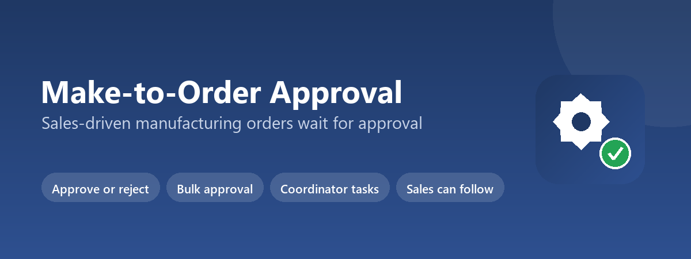

Manufacturing orders created from sales orders wait for a Manufacturing Coordinator's approval before anyone can plan, start or produce them.
When a confirmed sales order creates a manufacturing order, the order is marked Waiting Approval and every Manufacturing Coordinator gets a task. A coordinator approves it with one click, or rejects it with a reason that goes to the salesperson. Until it is approved the order cannot be planned, started or produced, while everything else works as usual.
✅ Coordinator approvalCoordinators approve with one click, or reject with a reason and choose to keep the order on hold or cancel it. |
🔔 Tasks, not pop-upsEvery coordinator gets an activity, and one decision closes it for all of them. |
📋 Approve in bulkA To Approve list in Manufacturing shows the waiting orders. Select several and approve them together. |
💬 Salesperson is toldA rejection and its reason are sent to the salesperson on the sales order, and approvals are logged there too. |
👁 Salespeople follow alongAn optional access right adds a Manufacturing button to the sales orders a salesperson can open, strictly read-only. |
🎯 Only sales-driven ordersManufacturing orders created by hand or by reordering rules are never held, and you can switch the approval off per company. |
Odoo 18.0 • Community & Enterprise • depends on Sales and Manufacturing • Licence LGPL-3
Odoo implementation and development. thecodelegion.com